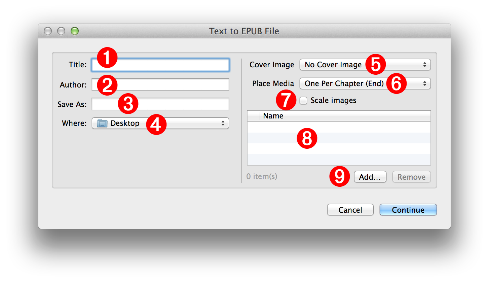

(⬇ see below ) The Text to EPUB action interface. (click to return to previous page)

Document Parameters and Metadata:
NOTE: all of these controls will accept Automator workflow variables as input
1 Title - Enter the title of the book in this text field.
2 Author - Enter the author of the book in this text field. By default, the name of the current user will be used.
3 File Name - Enter the name for the created EPUB document in this text field. EPUB file names must end with a name extension of "epub" like: My Story.epub
4 File Destination - Choose the folder that will contain the created EPUB document from this popup menu.
Optional Media:
5 Cover Image - Optionally, the EPUB book can have a custom cover image. Select the image file to be used as the cover image from this popup menu.
6 Media Placement - Images, audio (.m4a), or video (.m4v) files added to the book are placed one per chapter at either the beginning or end of each chapter. Select the insertion location from this popup menu.
NOTE: additional media files (those unassigned to chapters) will be placed as a group at the end of the book in a chapter titled "Illustrations." For example, if seven images are added to a book containing three chapters, the first three images in the list will be placed one-per-chapter and the remainning four images will be placed in an illustrations chapter at the end of the book.
7 Scale Images - Select this checkbox if you want to reduce the file size of the EPUB document by scaling the images added to the book to fit within 1024 pixels.
8 Media List - A list of the added media files. Files can be added or removed using the controls beneath the list view 9 .